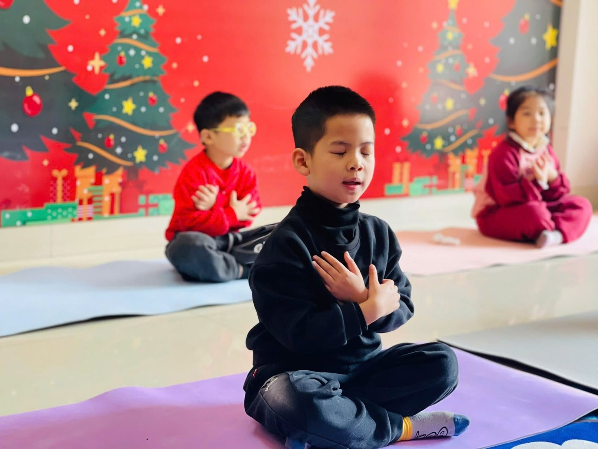

Yoga người lớn · Mantra, âm thanh và hơi thở
Những tầng nghĩa của mantra: từ âm Om, Om Shanti, Om Namo Guru Dev Namo đến lời Namaste và hát cùng nhau
Cuối một buổi tập, cả lớp chắp tay trước ngực. Cô nói “Namaste”, mọi người đáp lại. Một chị mới đến lớp lần đầu chờ mọi người về hết mới hỏi nhỏ: “Cô ơi, Namaste nghĩa là gì ạ? Mà sao Om Shanti lại phải đọc ba lần?”
Câu hỏi rất thật. Nhiều người tập yoga cả năm, đọc theo cô mỗi buổi, mà chưa ai giải thích cho.
Cô kể chị nghe một chút. Rồi về nhà ngồi viết tiếp. Vì mỗi câu mantra quen thuộc ấy có nhiều tầng hơn cô kể được trong năm phút ở cửa lớp. Tầng của chữ. Tầng của triết lý yoga. Và một tầng cô quý nhất: điều câu đó làm với hơi thở, với cơ thể, với lòng mình, khi mình đọc nó mỗi ngày.
Bài Mantra: nguồn gốc, lợi ích và cách tụng đã kể mantra bắt đầu từ đâu, não bộ thay đổi thế nào, cách cầm chuỗi hạt. Bài này đi tiếp: từng câu một, từng tầng một, cách nhấn nhá cho đúng nhịp, và chuyện gì xảy ra khi cả một vòng người cùng hát.
Câu chuyện được kể lại từ lớp học, đã đổi chi tiết để giữ riêng tư.
- Ba tầng của một câu mantra
- Ý nghĩa âm Om
- Ngân Om cùng cô
- Chữ “Namo” và tiếng “Nam mô”
- Mười câu mantra, từng tầng nghĩa
- Nhấn nhá: âm nặng, âm nhẹ
- Namaste: ý nghĩa và cách thực hành
- Hát cùng nhau: kirtan, gọi và đáp
- Khoa học nói gì
- Phục hồi trên năm thể
- Lưu ý khi thực hành
Ba tầng của một câu mantra
Sophia hay nghĩ về một câu mantra như một ngôi nhà ba tầng.
Tầng chữ
Câu đó dịch ra nghĩa là gì. Từ nào ghép với từ nào. Phần này tra được trong từ điển tiếng Phạn.
Tầng yoga
Người xưa đặt câu ấy vào đâu: kinh nào, nghi thức nào, để mở đầu hay khép lại, để nhớ điều gì. Phần này nằm trong các Upanishad, Yoga Sutra, truyền thống thầy trò.
Tầng chữa lành
Khi đọc câu ấy, hơi thở mình dài ra thế nào, âm rung ở đâu trong người, lòng mình hướng về điều gì. Phần này không tra được. Chỉ thực hành mới biết.
Chữ “chữa lành” ở đây cô dùng theo nghĩa nhẹ nhàng. Không phải chữa khỏi bệnh. Mà là giúp thân và tâm trở lại cân bằng, như một bàn tay đặt lên vai lúc mình mệt. Mantra không thay thuốc, không thay bác sĩ. Nó đi cùng lối sống: ăn ngủ điều độ, thở đúng, cột sống được chăm, tâm được nghỉ.
Một điều nữa. Người tập ở lớp cô có đủ cả: theo đạo Phật, đạo Công giáo, không theo tôn giáo nào. Ai cũng tụng được, vì phần lớn mantra trong bài là lời chúc, lời biết ơn, lời mong bình an. Ai thấy câu nào không hợp đức tin của mình thì cứ dùng câu niệm quen thuộc của mình. Âm thanh và hơi thở vẫn làm việc của nó.
Ý nghĩa âm Om
Nếu chỉ được giữ một âm trong cả kho mantra, người tập yoga sẽ giữ Om. Gần như câu mantra nào cũng mở đầu bằng nó. Ở bài trước cô đã kể Om gồm ba âm A, U, M và khoảng lặng phía sau. Ở đây đi sâu thêm một chút.
Tầng chữ: một âm không dịch được
Om (viết là ॐ) không có nghĩa như một từ bình thường. Nó không phải danh từ, không phải động từ. Trong tiếng Phạn nó còn có tên là pranava, thường hiểu là “âm vang lên, ngân dài”, và udgitha, “khúc hát cất lên”. Chandogya Upanishad mở đầu bằng câu: hãy tôn kính Om như khúc hát cất lên. Taittiriya Upanishad nói gọn hơn: “Om là Brahman”, là cái toàn thể.
Tầng yoga: bốn trạng thái của ý thức
Mandukya Upanishad, bản kinh mười hai câu, chia Om thành bốn phần, mỗi phần ứng với một trạng thái mà người nào cũng đi qua mỗi ngày:
Thức (Vaishvanara)
Lúc mắt mở, hướng ra ngoài. Mình thấy, nghe, làm việc.
Mơ (Taijasa)
Lúc hướng vào trong. Hình ảnh, ký ức, suy nghĩ tự hiện ra.
Ngủ sâu (Prajna)
Không mơ, không nghĩ. Mọi thứ gom về một.
Thứ tư (Turiya)
Khoảng lặng sau tiếng M. Kinh gọi là “không có phần đo”, an tĩnh, nền của cả ba trạng thái kia.
Cô thích cách hiểu này vì nó gần với đời thường. Một tiếng Om là một ngày thu nhỏ: thức, mơ, ngủ, rồi về với cái lặng ở dưới tất cả. Mỗi lần ngân, mình đi một vòng như vậy trong vài giây.
Patanjali, trong Yoga Sutra, viết ba câu liền nhau về Om. Câu 1.27: âm biểu hiện cho Ishvara là pranava. Câu 1.28: hãy lặp lại nó và thấm nghĩa của nó. Câu 1.29 là câu cô hay nhắc học viên: từ đó, ý thức quay vào trong, và các chướng ngại biến mất. Ngay sau đó, câu 1.30 kể tên các chướng ngại ấy: bệnh, uể oải, nghi ngờ, cẩu thả, lười, ham muốn, nhìn sai, không tiến lên được, không giữ được. Người xưa đã thấy Om như một cách đi qua những lúc thân và tâm chùng xuống.
Mundaka Upanishad có một hình ảnh đẹp: Om là cây cung, tự ngã là mũi tên, cái toàn thể là đích. Bắn cho chú tâm, mũi tên hòa vào đích. Katha Upanishad thì nói: thần Chết Yama nói với cậu bé Nachiketa: lời mà mọi bộ Vệ Đà cùng ca ngợi, ta nói gọn cho con, chính là Om.
Tầng chữa lành: thân, khí, tâm
Khi ngân Om, ba điều xảy ra cùng lúc. Hơi thở ra dài gấp mấy lần hơi hít vào, cơ thể chuyển dần sang chế độ nghỉ. Âm rung đi từ bụng lên ngực lên đầu, mình cảm được cơ thể từ bên trong. Và cái đầu có đúng một việc để làm, nên những suy nghĩ khác tạm lui. Phần “mmm” kéo dài cũng giống hệt tiếng ong vo ve, kiểu ngân làm tăng khí nitric oxide trong mũi mà bài trước đã kể.
Phần quan trọng nhất lại là phần không có tiếng. Nhiều người ngân Om xong vội hít vào ngay. Cô hay nói: dừng lại một nhịp. Nghe tiếng ngân tắt dần trong đầu. Cái lặng ấy chính là phần thứ tư. Ngồi trong nó vài giây thôi, rồi mới hít.
Ngân Om cùng cô
Mỗi tiếng Om có năm nhịp: hít vào, A, U, M, lặng. Theo kinh nghiệm cô dạy, phần M nên dài nhất, khoảng gấp đôi A hay U, vì đó là phần âm rung lên đầu rõ nhất. Đây là cách nhiều trường yoga dạy, không phải luật cố định. Thấy hụt hơi thì chọn nhịp ngắn hơn.
Âm nền là một tiếng ngân tổng hợp đổi màu theo A, U, M để bạn bắt nhịp, không phải giọng người thật. Ngân theo giọng tự nhiên của mình, không cần giống.
Chữ “Namo” và tiếng “Nam mô” của người Việt
Có một chi tiết làm cô rất vui khi biết. Chữ namo trong “Om Namo Guru Dev Namo”, chữ namah trong “Om Namah Shivaya”, chữ nama trong “Namaste”, đều từ một gốc tiếng Phạn: namas, nghĩa là cúi đầu, kính lễ.
Và tiếng “Nam mô” mà bà, mẹ mình vẫn niệm ở chùa cũng chính là chữ ấy, được phiên âm qua tiếng Hán rồi sang tiếng Việt. “Nam mô A Di Đà Phật” là “kính lễ Đức Phật A Di Đà”.
Nghĩa là người Việt mình đã tụng mantra từ rất lâu. Chỉ là mình gọi nó bằng một cái tên khác. Khi cô dạy “Om Namo” cho các chị lớn tuổi, nói câu này xong là thấy mắt các chị sáng lên. Cái lạ hóa thành cái quen.
Tầng chữa lành của chữ “namo” nằm ở động tác cúi đầu. Người đang căng, đang tự ái, đang mệt mỏi vì phải gồng, rất khó cúi đầu. Một tiếng “namo” đọc chậm là một lần cho phép mình hạ cái tôi xuống một chút. Hạ vai xuống một chút. Thở ra.
Mười câu mantra, từng tầng nghĩa
Mỗi thẻ dưới đây có câu gốc, cách đọc gần đúng cho người Việt, ba tầng nghĩa và cách ngân. Bấm vào tên câu để mở. Các câu Om, Om Mani Padme Hum, So Hum, Lokah Samastah đã có phần giới thiệu ở bài trước, ở đây cô chỉ thêm những tầng chưa kể.
ओं नमो गुरु देव नमोOm Namo Guru Dev NamoLời mở đầu buổi tập, cúi chào người thầy
Đọc: Ông na-mô, gu-ru đêv na-mô. Trong Kundalini Yoga người ta đọc “Ong” với âm mũi ngân vang. Nhiều lớp khác đọc “Om”.
Tầng chữ. Om/Ong: âm khởi nguồn. Namo: con cúi chào. Guru: người thầy. Dev: thuộc về điều thiêng liêng, tinh tế. Namo: con cúi chào. Gộp lại: “Con cúi chào trí tuệ sáng tạo. Con cúi chào người thầy thiêng liêng.”
Tầng yoga. Câu này được gọi là Adi Mantra, “câu đầu tiên”, dùng để mở mọi buổi tập trong Kundalini Yoga do Yogi Bhajan đưa sang phương Tây từ cuối những năm 1960. Người tập hát ba lần, gọi là “tune in”, bắt sóng. Về chữ Guru, Advayataraka Upanishad giải thích: “gu” là bóng tối, “ru” là cái xua tan nó. Guru là cái đưa mình từ tối ra sáng. Người thầy ấy có thể là một con người, cũng có thể là phần sáng suốt, hiền lành sẵn có bên trong mỗi người.
Tầng chữa lành. Câu đọc ở đầu buổi, như một cánh cửa. Mình vừa từ ngoài đường, từ công việc, từ bếp vào lớp. Ba lần “Namo” giúp mình chuyển: bỏ vai người làm, người lo, thành người học. Cô thấy những người có thói quen tự trách mình rất cần câu này. Cúi chào phần sáng suốt bên trong tức là tin rằng mình có nó.
Cách ngân. Hít sâu một hơi. Cả câu trong một hơi thở ra. “Ong” kéo dài, rung ở mũi và trán. “Namo” ngắn. “Guru” nhẹ. “Dev” kéo dài. “Namo” cuối buông dần. Hai tay chắp trước ngực, hai ngón cái chạm nhẹ xương ức. Hát đủ ba lần.
ॐ शान्तिः शान्तिः शान्तिःOm Shanti Shanti ShantiBa lần bình an, khép lại buổi tập
Đọc: Ôm, san-ti, san-ti, san-ti. Chữ “sh” đọc nhẹ như “s” uốn lưỡi. Âm “h” cuối mỗi chữ (shantih) chỉ là một hơi thở ra khẽ.
Tầng chữ. Shanti là bình an, yên tĩnh. Cả câu: “Om, bình an, bình an, bình an.”
Tầng yoga. Ba chữ shanti là phần kết của các shanti mantra, những lời nguyện bình an mở đầu và kết thúc các bản Upanishad. Theo cách giải thích truyền thống, đọc ba lần để xin bình an trước ba loại khổ: khổ từ bên trong thân và tâm mình (adhyatmika), khổ đến từ người khác, loài khác (adhibhautika), và khổ đến từ thiên nhiên, những thứ ngoài tầm tay như thời tiết, thiên tai (adhidaivika).
Tầng chữa lành. Cô hay dẫn: chữ shanti thứ nhất gửi vào trong mình, cho cái lưng đang đau, cái đầu đang ồn. Chữ thứ hai gửi ra những người quanh mình, kể cả người mình đang giận. Chữ thứ ba gửi ra trời đất, chấp nhận những gì mình không điều khiển được. Ba vòng tròn, từ nhỏ ra lớn.
Cách ngân. Nhiều lớp đọc ba chữ shanti nhỏ dần: lần một rõ, lần hai vừa, lần ba gần như thì thầm, rồi im lặng. Như tiếng chuông tắt dần. Có lớp đọc ngược lại, to dần. Cô chọn nhỏ dần vì nó dẫn mình vào yên tĩnh.
ॐ सह नाववतुOm Saha NavavatuLời nguyện của thầy và trò trước giờ học
Đọc: Ôm sa-ha na-va-va-tu, sa-ha nau bhu-nak-tu, sa-ha vi-ri-am ka-ra-va-va-hai, tê-jas-vi na-va-đhi-ta-mát-tu, ma vi-đvi-sha-va-hai. Ôm san-ti san-ti san-ti.
Tầng chữ. “Nguyện che chở cho cả hai chúng ta. Nguyện nuôi dưỡng cả hai chúng ta. Nguyện chúng ta cùng làm việc với sức mạnh. Nguyện điều chúng ta học được sáng tỏ. Nguyện chúng ta không ghét bỏ nhau.”
Tầng yoga. Câu này mở đầu Katha Upanishad và nằm trong Taittiriya Upanishad. “Chúng ta” ở đây là thầy và trò. Lời nguyện không xin cho thầy giỏi hơn hay trò ngoan hơn. Nó xin cho cả hai cùng được che chở, cùng học, và đừng ghét nhau.
Tầng chữa lành. Câu cuối “ma vidvishavahai”, đừng ghét bỏ nhau, làm cô xúc động mỗi lần đọc. Người xưa biết rằng học cùng nhau lâu ngày sẽ có va chạm, nên nguyện từ trước. Ở các lớp đào tạo HLV, cô hay đọc câu này buổi đầu tiên. Cả lớp nhớ rằng mình ở đây để cùng lớn lên.
Cách ngân. Câu dài, chia năm hơi thở, mỗi hơi một vế. Đọc chậm, đều, cao độ gần như không đổi, kiểu tụng của Vệ Đà. Hợp nhất là khi thầy đọc trước từng vế, trò đọc theo.
असतो मा सद्गमयAsato Ma SadgamayaBa bước đi: từ không thật đến thật, từ tối đến sáng
Đọc: A-sa-tô ma sát ga-ma-ya, ta-ma-sô ma jyô-tir ga-ma-ya, mri-tyôr ma am-ri-tam ga-ma-ya.
Tầng chữ. “Dẫn con từ cái không thật đến cái thật. Dẫn con từ bóng tối đến ánh sáng. Dẫn con từ cái chết đến bất tử.”
Tầng yoga. Câu nằm trong Brihadaranyaka Upanishad (1.3.28), một trong những Upanishad cổ nhất. Ba vế là ba bậc của cùng một hành trình: nhìn rõ hơn, hiểu sáng hơn, bớt sợ hơn.
Tầng chữa lành. Cô đọc câu này khi lòng rối. “Cái không thật” với cô là những câu chuyện mình tự kể lúc lo: chắc người ta ghét mình, chắc mình bệnh nặng rồi. Nhiều khi nó không thật. Câu mantra nhắc mình dừng lại, nhìn lại, chọn tin vào điều đang thật sự xảy ra.
Cách ngân. Ba hơi thở, mỗi hơi một vế. Chữ “gamaya” cuối mỗi vế ngân dài, như mình đang bước. Kết bằng Om Shanti ba lần.
गायत्रीGayatri MantraCâu cầu xin ánh sáng cho trí tuệ
Đọc: Ôm bhur bhu-vah svah, tát sa-vi-tur va-rê-ni-am, bhar-gô đê-vát-xi-a đhi-ma-hi, đhi-yô yô nah pra-chô-đa-yat.
Tầng chữ. “Chúng con chiêm nghiệm ánh sáng đáng tôn kính của Savitri, đấng ban sự sống. Nguyện ánh sáng ấy soi sáng trí tuệ chúng con.” Savitri là mặt trời trong vai người đánh thức, người khơi nguồn.
Tầng yoga. Câu gốc trong Rig Veda (3.62.10), viết theo thể thơ Gayatri, ba dòng tám âm tiết. Phần “Om bhur bhuvah svah” ở đầu (đất, khoảng không, trời) được thêm vào sau, theo các bản Vệ Đà muộn hơn. Đây là một trong những câu thiêng nhất của Ấn Độ giáo. Có truyền thống chỉ truyền nó khi làm lễ nhập môn. Ngày nay nhiều người tụng rộng rãi, cô vẫn đọc nó với sự tôn trọng ấy.
Tầng chữa lành. Điều cô thấy đẹp: câu này không xin tiền, không xin khỏe, không xin may. Nó xin cho trí tuệ được sáng. Như mặt trời mỗi sáng đánh thức muôn loài. Đọc vào buổi sớm, ngồi quay về hướng đông, có nắng nhẹ lên mặt, là lúc cô thấy câu này thấm nhất. Rất hợp với thói quen tắm nắng sớm của lối sống cân bằng.
Cách ngân. Ba dòng là ba hơi thở (thêm một hơi cho phần mở đầu). Truyền thống đọc 3, 9, 27 hoặc 108 lần. Người mới nên nghe vài bản ghi âm trước rồi mới tự đọc. Bài trước có link nghe bản của Deva Premal.
ॐ नमः शिवायOm Namah ShivayaCúi chào phần lành bên trong
Đọc: Ôm na-mah si-va-ya. Năm âm sau Om: na, mah, shi, va, ya.
Tầng chữ. “Con cúi chào Shiva.” Nhưng chữ shiva nghĩa gốc là điềm lành, hiền hòa, tốt đẹp.
Tầng yoga. Năm âm “na-mah-shi-va-ya” được gọi là panchakshara, câu năm âm, có gốc trong bài tụng Sri Rudram của Yajur Veda. Truyền thống Shaiva coi Shiva là ý thức thuần khiết, là bậc thầy đầu tiên của yoga (Adiyogi).
Tầng chữa lành. Với người không theo Ấn Độ giáo, cô gợi ý hiểu theo nghĩa gốc: “con cúi chào phần lành bên trong con”. Đọc câu này lúc giận, lúc thấy mình xấu xí, khó thương. Phần lành vẫn ở đó. Câu mantra nhắc mình nhớ.
Cách ngân. Câu ngắn, rất hợp để lần hạt, một hạt một câu. Hoặc hát chậm theo kiểu gọi và đáp ở phần cuối bài.
ॐ मणि पद्मे हूँOm Mani Padme HumThêm một tầng: phương tiện và trí tuệ
Tầng chữ (đã kể ở bài trước): viên ngọc trong hoa sen.
Tầng yoga. Đức Đạt Lai Lạt Ma trong một bài giảng được in lại nhiều lần đã giải thích sáu âm như sau. Om tượng trưng cho thân, khẩu, ý còn chưa trong sạch của người tu, và thân, khẩu, ý thanh tịnh của bậc giác ngộ. Mani, viên ngọc, là phương tiện: lòng từ bi, ý muốn giúp người. Padme, hoa sen, là trí tuệ, như sen mọc từ bùn mà không vấy bùn. Hum là sự không tách rời của hai điều ấy. Ngài tóm lại: nhờ thực hành con đường hợp nhất phương tiện và trí tuệ, thân khẩu ý không trong sạch có thể chuyển thành thanh tịnh.
Tầng chữa lành. Thương mà không có hiểu thì dễ kiệt sức. Hiểu mà không có thương thì dễ lạnh lùng. Câu chú nhắc giữ cả hai. Rất hợp với những người làm nghề chăm sóc: cô giáo, điều dưỡng, mẹ có con nhỏ.
Cách ngân. Kiểu Tây Tạng đọc nhanh, đều, liền mạch như dòng nước, nhiều lần trong một hơi. Người mới nên đọc chậm, một câu một hơi thở ra.
लोकाः समस्ताः सुखिनो भवन्तुLokah Samastah Sukhino BhavantuThêm một tầng: tâm từ của Yoga Sutra
Tầng chữ (đã kể ở bài trước): nguyện cho muôn loài khắp nơi được an vui. Thêm một chi tiết: loka nghĩa là các cõi, các thế giới. Lời chúc không dừng ở những người mình quen.
Tầng yoga. Yoga Sutra câu 1.33 dạy bốn thái độ giúp tâm trong sáng: thân thiện với người hạnh phúc, thương người đau khổ, vui với người làm điều tốt, bình thản với người làm điều chưa tốt. Lokah Samastah là cách tập thái độ thứ nhất, mở rộng ra tất cả.
Tầng chữa lành. Có nghiên cứu về thiền tâm từ, kiểu thiền gửi lời chúc lành tới mình và người khác. Một nghiên cứu năm 2008 ở Đại học Stanford cho thấy chỉ vài phút thiền tâm từ đã làm người tham gia thấy gần gũi, tích cực hơn với cả người lạ. Một nghiên cứu khác cùng năm thấy tập thiền tâm từ trong nhiều tuần làm cảm xúc tích cực tăng dần mỗi ngày. Nguồn ở cuối bài.
Cách ngân. Bốn cụm, mỗi cụm một nhịp. Cả lớp đọc ba lần, lần cuối chậm lại. Ở lớp cô, câu này đi cùng hai tay đặt lên tim.
सोऽहम् · हंसSo Hum và HamsaThêm một tầng: con thiên nga của hơi thở
Tầng chữ. So hum: “Ta là Đó.” Đọc ngược lại thành ham-sa, cũng là chữ chỉ con thiên nga.
Tầng yoga. Truyền thống gọi So Hum là ajapa japa, câu niệm không cần niệm, vì hơi thở tự đọc nó suốt ngày đêm. Thiên nga (hamsa) trong văn học Ấn Độ là hình ảnh của linh hồn, được tin là biết tách sữa khỏi nước: biết giữ điều thật, bỏ điều không thật.
Tầng chữa lành. Đây là câu cô hay gợi ý cho người mất ngủ, người hay lo. Không phải phát ra tiếng, không phải nhớ câu dài. Chỉ nghe hơi thở. Hít vào “so”, thở ra “hum”. Nằm trên giường cũng tập được.
Cách ngân. Không ra tiếng. Hít vào bằng mũi, nghe thầm “sooo”. Thở ra bằng mũi, nghe thầm “hummm”. Để hơi thở ra dài hơn hơi vào một chút.
ॐOm đơnCâu ngắn nhất, đủ cho mọi lúc
Cô để Om ở cuối danh sách như một lời nhắc: nếu không nhớ câu nào, chỉ cần một tiếng Om. Ba tiếng mở đầu, ba tiếng kết thúc. Xem lại phần ý nghĩa âm Om và ngân Om cùng cô ở trên.
Nhấn nhá: âm nặng, âm nhẹ
Nhiều người hỏi cô đọc mantra sao cho “đúng”. Thật ra tiếng Phạn có một quy tắc rất đơn giản mà ít ai kể: âm tiết có hai loại, nhẹ và nặng. Âm nhẹ (laghu) ngân một nhịp. Âm nặng (guru) ngân hai nhịp.
- Âm nặng khi có nguyên âm dài (ā, ī, ū, e, o, ai, au), hoặc khi sau nó là hai phụ âm liền nhau, hoặc khi kết thúc bằng m hay h. Ví dụ: lō trong Lokah, vā trong Shivaya, pad trong Padme.
- Âm nhẹ là nguyên âm ngắn (a, i, u) đứng một mình. Ví dụ: sa, khi, tu.
- Nhịp nặng nhẹ ấy tạo nên nhạc tính của câu. Đọc đúng nhịp, câu tự trôi, hơi thở tự đều. Đọc đều đều như nhau, câu dễ bị cụt hơi giữa chừng.
Ô dưới đây tô sáng từng âm theo nhịp. Ô vàng đậm là âm nặng, ô nhạt là âm nhẹ. Đọc theo ô đang sáng, ba lần, có một nhịp hít vào trước mỗi lần.
Cách chia âm nặng nhẹ theo quy tắc vần luật tiếng Phạn. Riêng Om Namo Guru Dev Namo theo cách hát quen thuộc trong các lớp Kundalini. Khi hát thành giai điệu, người ta thường kéo dài âm cuối mỗi cụm hơn nữa.
Namaste: ý nghĩa, lợi ích và cách thực hành

Tầng chữ
Namaste ghép từ namah (cúi chào, kính lễ) và te (bạn, người). Nghĩa đen: “Tôi cúi chào bạn.” Ở Ấn Độ, Nepal, đây là lời chào hằng ngày, nói với người lớn tuổi, với khách, với người lạ. Như mình nói “Con chào bác” vậy. Dạng trang trọng hơn là namaskar.
Có một câu rất phổ biến trong các lớp yoga phương Tây: “Phần thiêng liêng trong tôi cúi chào phần thiêng liêng trong bạn.” Cô thấy câu này đẹp. Nhưng cô cũng muốn nói thật: đó là cách diễn giải thêm của người tập yoga hiện đại, không phải nghĩa dịch từ chữ. Nghĩa gốc giản dị hơn nhiều, và cô nghĩ sự giản dị ấy cũng đủ sâu.
Tầng yoga: cử chỉ Anjali
Đi kèm lời chào là cử chỉ chắp hai bàn tay trước ngực, gọi là Anjali mudra. Anjali nghĩa là dâng lên, hai bàn tay khum lại như đang nâng một món quà. Hai bàn tay, phải và trái, áp vào nhau ở giữa thân. Yoga hay hiểu đó là hai nửa được đưa về cân bằng: hoạt động và nghỉ ngơi, cho và nhận, mình và người.
Người Việt mình cũng chắp tay. Chắp tay vái ông bà, chắp tay trước tượng Phật, chắp tay xin lỗi, cảm ơn. Nên Namaste với mình không xa lạ chút nào.
Tầng chữa lành
Cô thấy lời chào này làm được ba việc nhỏ mà quý:
🛑 Dừng lại
Chắp tay là một khoảnh khắc không làm gì khác. Hai tay bận chắp thì không cầm điện thoại, không vội đi. Một nhịp dừng giữa buổi tập và cuộc sống bên ngoài.
💛 Biết ơn
Cúi đầu là cảm ơn: cảm ơn cơ thể đã tập cùng mình, cảm ơn người dạy, người tập bên cạnh. Lòng biết ơn là một phần của niyama santosha, tự bằng lòng.
🤝 Kết nối không cần chạm
Chào mà không bắt tay, không ôm. Người ngại tiếp xúc vẫn thấy được chào đón. Thời dịch bệnh, nhiều người trên thế giới đã chọn cách chào này.
Còn có một chi tiết cơ thể. Khi chắp tay sát xương ức, hai ngón cái chạm nhẹ vào ngực, phần lớn người ta tự nhiên ngồi thẳng hơn, vai mở, cằm hơi thu. Cột sống được nhắc nhở mà không cần ai chỉnh. Có một nghiên cứu năm 2021 ở Đức cho thấy tự đặt một tay lên ngực, một tay lên bụng trước một tình huống căng thẳng làm mức cortisol, hormone căng thẳng, tăng ít hơn so với nhóm không làm gì. Nghiên cứu ấy không nói về Namaste, nhưng nó gợi ý rằng những cử chỉ tự chạm nhẹ nhàng có ích hơn mình tưởng.
Cách thực hành Namaste
- Ngồi hoặc đứng cho cột sống thẳng. Hai vai thả. Thở vài hơi.
- Chắp tay trước ngực. Lòng bàn tay áp vào nhau nhưng giữa hai lòng tay còn một khoảng nhỏ, như đang giữ một nụ sen. Ngón tay hướng lên. Ngón cái chạm nhẹ xương ức.
- Hít vào, ngồi cao lên. Thở ra, cúi đầu nhẹ. Không cần cúi sâu. Mắt có thể khép lại.
- Nói “Namaste” khi thở ra, chậm, nhỏ. Hoặc chỉ chắp tay mà không nói, cũng là Namaste.
- Dừng một hơi thở trước khi mở tay ra. Cô hay để cả lớp ở yên đó một lúc.
Ở một số truyền thống, tay chắp ở ngực là chào người ngang hàng, chắp ở trán là kính trọng thầy, chắp trên đỉnh đầu là kính lễ điều thiêng liêng. Trong lớp, cô chỉ dùng ở ngực. Đơn giản và đủ.
Đầu buổi, Namaste là lời chào và lời hứa với chính mình: con sẽ tập nhẹ nhàng, lắng nghe cơ thể. Cuối buổi, sau Om Shanti, Namaste là lời cảm ơn trước khi mỗi người trở về cuộc sống của mình.
Hát cùng nhau: kirtan, gọi và đáp, ngồi vòng tròn
Tụng một mình là một trải nghiệm. Hát cùng hai mươi người là một trải nghiệm hoàn toàn khác. Người Ấn Độ gọi kiểu hát mantra tập thể là kirtan, từ truyền thống bhakti, con đường yoga của lòng yêu thương. Một người hát trước một câu (gọi), cả nhóm hát lại câu ấy (đáp). Thường có tiếng đàn harmonium ngân nền, tiếng trống nhỏ, tiếng chũm chọe.
Điều đặc biệt của kirtan là nhịp. Bắt đầu rất chậm. Nhanh dần lên, có khi cả phòng vỗ tay, đung đưa. Rồi chậm lại. Rồi dừng hẳn. Và sau đó là phần quý nhất: một khoảng im lặng dài mà ai cũng cảm thấy rõ, giống như khoảng lặng sau tiếng Om, chỉ là nó lớn bằng cả căn phòng.
Cách cô dẫn một vòng hát gọi và đáp
- Ngồi thành vòng tròn. Ai cũng thấy mặt nhau, không ai ở hàng sau. Người dẫn ngồi trong vòng, không đứng trên cao. Ngồi gối, ngồi ghế đều được, lưng thẳng, hai đầu gối thấp hơn hông.
- Mở bằng một tiếng chuông và ba tiếng Om. Cả vòng ngân cùng một hơi. Đây là lúc mọi người bắt nhịp thở với nhau.
- Chọn câu ngắn. Om Namah Shivaya, Lokah Samastah, Om Shanti. Câu dài quá thì người mới bị bỏ lại.
- Người dẫn gọi, cả vòng đáp. Người dẫn hát rõ, chậm. Lượt đáp không cần giống hệt, chỉ cần cùng nhịp.
- Nghe nhiều hơn hát. Cô hay dặn: hát nhỏ hơn người bên cạnh một chút. Khi ai cũng vậy, cả vòng hòa thành một giọng, không ai át ai.
- Chậm, nhanh, chậm, lặng. Tăng nhịp từ từ. Đến đỉnh thì hạ dần. Câu cuối hát rất nhỏ, như thì thầm.
- Ngồi im ít nhất một phút. Hai tay đặt lên đùi hoặc lên tim. Cảm nhận rung động còn lại trong người.
- Kết bằng Om Shanti và Namaste. Cúi chào người ngồi bên trái, bên phải, người đối diện.
Ô dưới đây là một vòng gọi và đáp thu nhỏ. Chọn câu, bấm bắt đầu. Khi chấm giữa sáng là lượt cô gọi, khi cả vòng sáng là lượt mọi người đáp. Nhịp sẽ đi chậm, nhanh dần, chậm lại, rồi lặng, khoảng hai phút.
Video: một vòng hát cùng Sophia
Video ngắn dưới đây đi qua ba tiếng Om, ba tầng Om Shanti, một vòng gọi và đáp Lokah Samastah, rồi kết bằng Namaste. Bạn có thể bật cho cả nhóm cùng làm theo.
Năng lượng cộng đồng, theo cách cô hiểu, không có gì bí ẩn. Đó là cảm giác mình không một mình. Có người đang mất ngủ cả tuần, có người vừa mất việc, có người đang chăm mẹ ốm. Không ai kể gì. Nhưng khi giọng của từng người hòa vào nhau, mỗi người được nâng đỡ một chút bởi hơi thở của những người còn lại. Hôm nào mình yếu, vòng tròn hát giùm mình. Hôm nào mình khỏe, mình hát giùm người khác.
Khoa học nói gì, và chưa nói gì
Ngân Om và hệ thần kinh. Năm 2022, một nhóm nghiên cứu ở Bangalore đo nhịp tim của 36 người trước và sau 5 phút ngân Om thành tiếng, khoảng 6 hơi thở mỗi phút. Ở nhóm đã tập yoga lâu năm, thành phần tần số cao của biến thiên nhịp tim (chỉ dấu hoạt động phó giao cảm, hệ “nghỉ ngơi”) tăng rõ sau khi ngân. Ở nhóm mới tập, thay đổi không rõ bằng. Chính các tác giả nói mẫu nhỏ, chưa có nhóm đối chứng ngân một âm trung tính, và chưa đo hơi thở (Inbaraj và cộng sự, International Journal of Yoga 2022).
Ngân Om làm nhịp tim, huyết áp, hơi thở đi cùng nhau. Một nghiên cứu ở Thụy Sĩ năm 2022 cho 9 người ngân Om khi đứng. Hơi thở chậm xuống khoảng 3 lần mỗi phút. Mức đồng bộ giữa nhịp tim và hơi thở tăng từ khoảng 0,41 lúc nghỉ lên 0,88 lúc ngân, rồi trở lại khi dừng. Rất ít người, chỉ đo trong một buổi (Hotho và cộng sự, Frontiers in Physiology 2022).
Niệm Om trong tâm. Từ năm 1995, nhóm của Shirley Telles đo 7 người thiền lâu năm khi niệm Om không thành tiếng: nhịp tim giảm so với lúc ngồi nghĩ lan man, trong khi một số chỉ số khác cho thấy họ vẫn tỉnh táo. Các tác giả gọi đó là “thư giãn mà vẫn tỉnh” (Indian Journal of Physiology and Pharmacology 1995).
Hát cùng nhau, tim đập cùng nhau. Năm 2013, nhóm ở Đại học Gothenburg (Thụy Điển) cho 15 bạn trẻ hát đồng thanh, có cả một câu mantra chậm. Họ thấy khi hát đồng thanh những câu có cấu trúc đều, tim của các ca sĩ tăng tốc và chậm lại gần như cùng lúc (Vickhoff và cộng sự, Frontiers in Psychology 2013). Năm 2011, nhóm ở Viện Max Planck (Berlin) đo 11 ca sĩ và một nhạc trưởng: hơi thở và biến thiên nhịp tim đồng bộ giữa các người hát hơn hẳn lúc nghỉ, và đồng bộ nhất khi hát cùng một giai điệu (Müller và Lindenberger, PLoS ONE 2011).
Hát giúp người lạ thân nhau nhanh hơn. Một nhóm ở Đại học Oxford theo dõi các lớp học người lớn trong bảy tháng. Lớp hát và lớp thủ công, viết văn cuối cùng đều thân nhau như nhau. Nhưng lớp hát thấy gần gũi nhanh hơn hẳn ngay từ tháng đầu. Họ gọi đó là “hiệu ứng phá băng” của việc hát cùng nhau (Pearce, Launay và Dunbar, Royal Society Open Science 2015).
Tâm từ. Vài phút thiền gửi lời chúc lành làm người ta thấy gần gũi hơn với người lạ (Hutcherson và cộng sự, Emotion 2008). Tập nhiều tuần làm cảm xúc tích cực tăng dần, kéo theo cảm giác có ý nghĩa, có người nâng đỡ (Fredrickson và cộng sự, Journal of Personality and Social Psychology 2008).
Điều khoa học chưa nói. Các nghiên cứu về Om còn rất nhỏ, thường chỉ vài chục người, đo trong một buổi. Chưa có nghiên cứu lớn nào cho thấy ngân Om hay hát kirtan chữa được một bệnh cụ thể. Nghiên cứu về hát đồng thanh làm trên dàn hợp xướng, chưa phải trên lớp yoga. Những gì cô viết ở trên là bằng chứng cho từng mảnh: thở ra chậm, ngân, hát cùng nhau, gửi lời chúc. Gặp đâu nói “tần số Om chữa ung thư” hay “tần số 528 Hz sửa DNA” thì cứ dè dặt. Cô chưa thấy một nghiên cứu nghiêm túc nào như vậy.
Phục hồi trên năm thể
Trong yoga cân bằng phục hồi, cô nhìn con người qua năm thể. Câu mantra chạm vào cả năm, nhưng chỉ là một phần của bức tranh. Đọc thêm ở Năm thể của con người.
Thân
Ngồi đúng để hát: cột sống thẳng, xương ức nâng, vai thả. Cổ họng mở mới ngân được. Rung động lan trong lồng ngực, khoang mũi.
Thể khí
Mỗi câu là một hơi thở ra dài. Hơi thở là gốc. Ngân đúng nhịp thì hơi thở tự chậm, tự đều, không cần ép.
Tâm
Shanti cho những lúc lo. Lokah Samastah cho những lúc giận. Namo cho những lúc gồng. Câu nào cũng có chỗ của nó.
Trí
Hiểu nghĩa thì câu không còn là âm vô nghĩa. Patanjali dặn: lặp lại và thấm nghĩa. Trí có một điểm tựa để quay về.
Tinh thần
Cúi chào, cảm ơn, chúc lành. Mình thấy mình nối với thầy, với bạn tập, với muôn loài. Đó là phần nuôi dưỡng sâu nhất.
Mantra trong tám bậc yoga. Patanjali xếp việc tụng niệm vào svadhyaya, tự học, một trong năm niyama (luật). Câu 2.44 nói: từ tự học, mình kết nối được với điều mình tôn kính. Cúi đầu “namo” là tập ishvara pranidhana, buông bớt cái tôi. Và khi hát cùng nhau, giới satya, chân thật, nhắc mình hát bằng giọng thật của mình, không cần hay, không cần giống ai. Đọc thêm ở Giới và luật trong yoga.
Và cũng như mọi bài viết khác của cô, câu mantra đi cùng lối sống. Ngủ đủ, ăn nhẹ buổi tối, đi chân đất trên cỏ, tắm nắng sớm, ít màn hình trước giờ ngủ, nghĩ về mình bằng những câu hiền lành hơn. Những câu niệm mỗi ngày dần thành giọng nói bên trong mình. Cô mong giọng nói ấy là giọng của Shanti, của Lokah Samastah, của một lời chào cúi đầu.
Lưu ý khi thực hành
| Tình huống | Cô thường điều chỉnh thế nào |
|---|---|
| Khản giọng, đau họng, viêm thanh quản | Chuyển sang thì thầm hoặc niệm thầm (So Hum). Uống nước ấm. Không cố hát to. Khàn tiếng kéo dài trên hai, ba tuần thì nên đi khám tai mũi họng. |
| Thấy choáng, chóng mặt khi ngân dài | Ngân ngắn lại, hít vào tự nhiên, không ép hết hơi. Người huyết áp thấp, đang mang thai, mới ốm dậy nên ngồi, không đứng. |
| Hen suyễn, bệnh phổi | Ngân ngắn, nghỉ giữa các tiếng. Mang thuốc theo. Khó thở thì dừng ngay. |
| Lo âu nặng, từng trải qua sang chấn | Ngồi tĩnh, nhắm mắt đôi khi làm cảm xúc cũ trồi lên. Mở mắt, ngồi gần cửa, tập ngắn, có người đồng hành, và vẫn giữ việc điều trị với bác sĩ, chuyên gia tâm lý. |
| Không hợp tín ngưỡng của mình | Dùng câu niệm của đức tin mình, hoặc câu tiếng Việt: “Bình an”, “Cảm ơn”, “Hít vào tâm tĩnh lặng, thở ra miệng mỉm cười”. Âm thanh và hơi thở vẫn có tác dụng. |
| Hát trong nhóm mà thấy ngại | Chỉ cần ngồi nghe. Nghe cũng là tham gia. Khi nào muốn, cất tiếng nhỏ thôi. |
Một điều về sự tôn trọng. Những câu mantra này là lời cầu nguyện thiêng liêng của hàng triệu người ở Ấn Độ, Nepal, Tây Tạng. Cô tụng chúng với lòng biết ơn với nền văn hóa đã giữ chúng ba nghìn năm. Không dùng làm khẩu hiệu bán hàng, không in lên những chỗ không trang trọng. Đó cũng là một cách thực hành.
Lời nhỏ cuối bài
Buổi tập tuần sau, chị học viên mới đến sớm. Lúc cả lớp chắp tay, chị là người nói “Namaste” rõ nhất. Ra về chị bảo cô: “Hôm nay em hiểu mình đang nói gì rồi, nên nói thấy khác lắm cô ạ.”
Đúng vậy. Câu vẫn là câu cũ. Chỉ có người đọc đã khác.
Om Shanti Shanti Shanti. Namaste.
🌿 Muốn được hướng dẫn tận tay?
Sophia Yoga có lớp người lớn trực tiếp, lớp Zoom và lớp kèm 1 kèm 1 (500.000đ / giờ) theo hướng yoga cân bằng phục hồi: hơi thở là gốc, cột sống là trọng tâm, tập vừa sức. Mỗi buổi đều mở bằng tiếng Om và khép lại bằng Om Shanti, Namaste. Ai muốn mang yoga, âm thanh và hơi thở đến với các con, có khóa đào tạo HLV Yoga trẻ em.
Đọc thêm: Mantra: nguồn gốc, lợi ích và cách tụng · điều khí trong yoga · các phép thở · Đạo Phật và yoga · năm thể của con người · căng thẳng, lo âu.
Tài liệu tham khảo
- Inbaraj G. và cộng sự (2022). Immediate effects of OM chanting on heart rate variability measures compared between experienced and inexperienced yoga practitioners. International Journal of Yoga, 15(1), 52–58. PMC
- Hotho G., von Bonin D., Krüerke D., Wolf U., Cysarz D. (2022). Unexpected cardiovascular oscillations at 0.1 Hz during slow speech guided breathing (OM chanting) at 0.05 Hz. Frontiers in Physiology, 13, 875583. PMC
- Telles S., Nagarathna R., Nagendra H.R. (1995). Autonomic changes during “OM” meditation. Indian Journal of Physiology and Pharmacology, 39(4), 418–420. PubMed
- Kumar S., Nagendra H.R., Manjunath N.K., Naveen K.V., Telles S. (2010). Meditation on OM: relevance from ancient texts and contemporary science. International Journal of Yoga, 3(1), 2–5. PubMed
- Vickhoff B. và cộng sự (2013). Music structure determines heart rate variability of singers. Frontiers in Psychology, 4, 334. Frontiers
- Müller V., Lindenberger U. (2011). Cardiac and respiratory patterns synchronize between persons during choir singing. PLoS ONE, 6(9), e24893. PMC
- Pearce E., Launay J., Dunbar R.I.M. (2015). The ice-breaker effect: singing mediates fast social bonding. Royal Society Open Science, 2(10), 150221. DOAJ
- Hutcherson C.A., Seppala E.M., Gross J.J. (2008). Loving-kindness meditation increases social connectedness. Emotion, 8(5), 720–724.
- Fredrickson B.L. và cộng sự (2008). Open hearts build lives: positive emotions, induced through loving-kindness meditation, build consequential personal resources. Journal of Personality and Social Psychology, 95(5), 1045–1062.
- Dreisoerner A. và cộng sự (2021). Self-soothing touch and being hugged reduce cortisol responses to stress. Comprehensive Psychoneuroendocrinology, 8, 100091.
- Kinh điển: Mandukya Upanishad; Chandogya Upanishad 1.1; Taittiriya Upanishad 1.8 và 2.1; Katha Upanishad 1.2.15; Mundaka Upanishad 2.2.4; Brihadaranyaka Upanishad 1.3.28; Advayataraka Upanishad; Rig Veda 3.62.10; Patanjali, Yoga Sutra 1.27–1.33 và 2.44.
- Đức Đạt Lai Lạt Ma, bài giảng “Om Mani Padme Hum” (in lại trong nhiều tuyển tập giáo lý, bản tiếng Anh do Jeffrey Hopkins dịch).
Hình bốn phần của Om, ba vòng Shanti, hình người và vòng tròn hát do Sophia Yoga tự vẽ để minh họa. Ảnh lớp học là ảnh thật của Sophia Yoga. Câu chuyện được kể lại, đã đổi chi tiết. Cách đọc tiếng Phạn ghi theo âm gần đúng cho người Việt. Bài viết chia sẻ kiến thức và kinh nghiệm tập luyện, không thay cho lời khuyên và chăm sóc của bác sĩ.